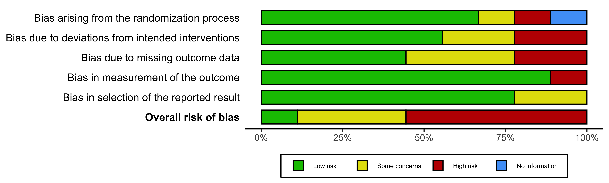
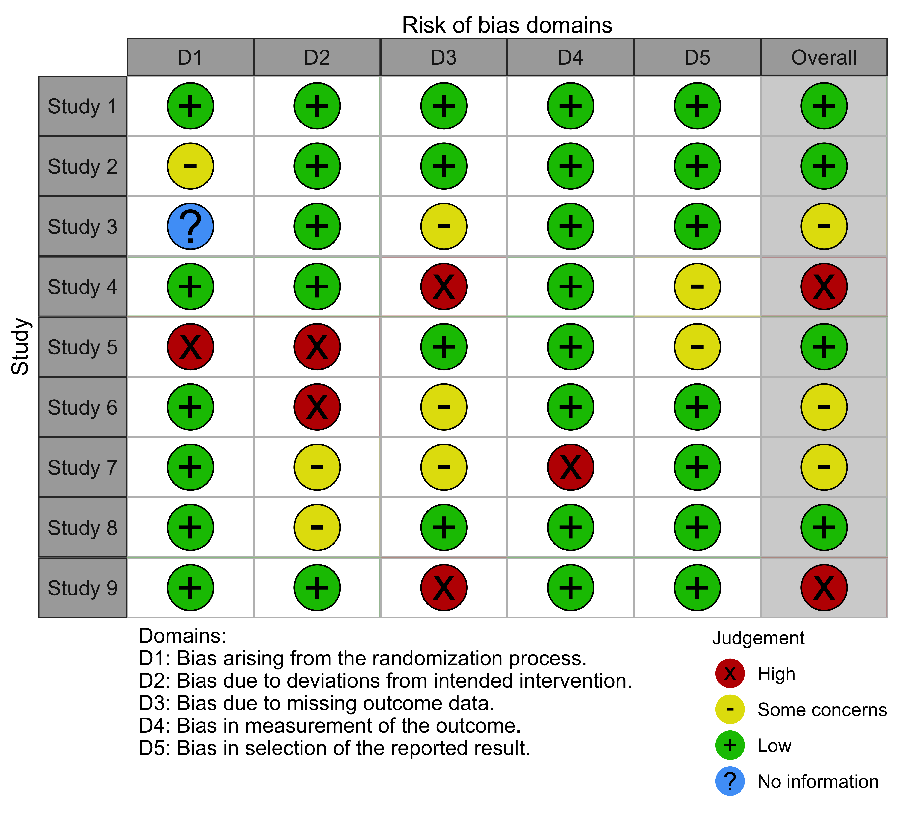
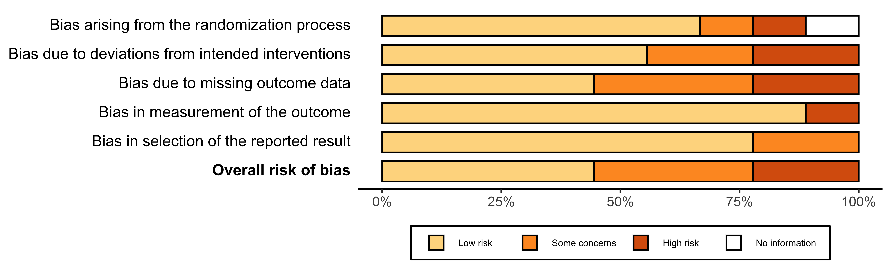
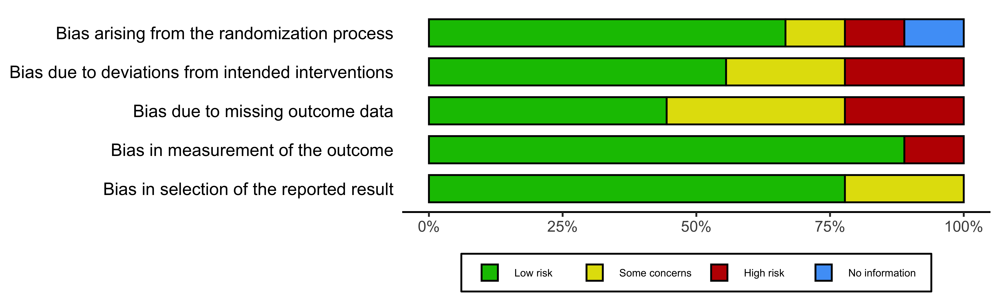
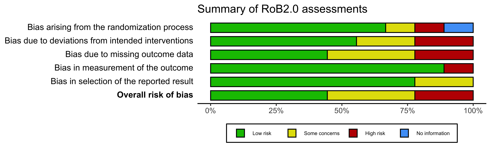

UPDATE: robvis now exists as a web-app, aimed at those who are not familiar with R or who want to explore the package’s functionality before installing it locally.
Description
The robvis package takes the summary table from risk-of-bias assessments and produces plots formatted according to the assessment tool used.
Getting started
Install the development version which contains new functionality and a range of bug fixes:
install.packages("devtools")
devtools::install_github("mcguinlu/robvis")To update the package, run the install_github("mcguinlu/robvis") command again.
If you wish to use the older CRAN version of the package, use the following command:
install.packages("robvis")Load data
To load your own data from a .csv file:
mydata <- read.csv("path/to/mydata.csv", header = TRUE)To help users explore robvis, we have included example datasets in the package, one for each of the tool templates that currently exist within the package. The data_rob2 dataset (view it here), which contains example risk-of-bias assessments performed using the RoB2.0 tool for randomized controlled trials, is used to create the plots in subsequent sections.
Create plots
The package contains two plotting functions:
1. rob_summary()
Returns a ggplot object displaying a barchart of the risk of bias of included studies across the domains of the specified tool.
* Note : thedefaultsusedinthisfunctionhavechangedfromtheiroriginalsettings, sothataun − weightedbarplotisnowproducedbydefault.SeetheNEWS.mdfileforfurtherinformation.*
summary_rob <- rob_summary(data = data_rob2, tool = "ROB2")
summary_rob
2. rob_traffic_light()
Returns a ggplot object displaying a “traffic light plot”, displaying the risk of bias judgment in each domain for each study.
trafficlight_rob <- rob_traffic_light(data = data_rob2,
tool = "ROB2",
psize = 10)
trafficlight_rob
Other functions
rob_save()
Pass the robvis to this function, along with a destination file, to save your risk-of-bias plots using sensible defaults.
rob_save(trafficlight_rob, "rob_fig.png")rob_tools()
Outputs a list of the risk of bias assessment tools for which a template currently exists in rob_summary(). We expect this list to be updated in the near future to include tools such as ROBIS (tool for assessing risk of bias in systematic reviews).
rob_tools()
#> Note: the "ROB2-Cluster" template is only available for the rob_traffic_light() function.
#> [1] "ROB2" "ROB2-Cluster" "ROBINS-I" "QUADAS-2" "QUIPS"
#> [6] "Generic"Advanced usage
Change the colour scheme
The colour argument of both plotting functions allows users to select from two predefined colour schemes (“cochrane” or “colourblind”) or to define their own palette by providing a vector of hex codes.
For example, to use the predefined “colourblind” palette:
rob_summary(data = data_rob2,
tool = "ROB2",
colour = "colourblind")
And to define your own colour scheme:
rob_summary(
data = data_rob2,
tool = "ROB2",
colour = c("#f442c8",
"#bef441",
"#000000",
"#d16684")
)
No “Overall” judgement
By default, both functions include an “Overall” risk of bias domain. To prevent this, set overall = FALSE.
summary_rob <- rob_summary(data = data_rob2, tool = "ROB2", overall = FALSE)
summary_rob
rob_traffic_light(data = data_rob2,
tool = "ROB2",
overall = FALSE)
Editing the plots
Finally, because the output (summary_rob and trafficlight_rob in the examples above) is a ggplot2 object, it is easy to adjust the plot to your own preferences.
For example, to add a title:
library(ggplot2)
rob_summary(data = data_rob2, tool = "ROB2") +
ggtitle("Summary of RoB 2.0 assessments")
Examples of robvis in published papers
- Perivoliotis, Konstantinos, et al. “Comparing the efficacy and safety of laparoscopic and robotic adrenalectomy: a meta-analysis and trial sequential analysis.” Langenbeck’s Archives of Surgery (2020): 1-11.
- Adile, Ashley A., et al. “Salvage therapy for progressive, treatment-refractory or recurrent pediatric medulloblastoma: a systematic review protocol.” Systematic Reviews 9.1 (2020): 1-9.
- Tanneru, Karthik, et al. “Meta-analysis and systematic review of intermediate-term follow-up of prostatic urethral lift for benign prostatic hyperplasia.” International Urology and Nephrology (2020): 1-10.
- Veloso, Andreia, et al.. “Effectiveness of Cognitive Training for School-Aged Children and Adolescents With Attention Deficit/Hyperactivity Disorder: A Systematic Review.” Frontiers in Psychology 10 (2020): 2983.
- Simillis, Constantinos, et al. “Postoperative chemotherapy improves survival in patients with resected high‐risk stage II colorectal cancer: results of a systematic review and meta‐analysis.” Colorectal Disease (2020).
- Habadi, Mohammed Ibrahim, et al. “Prevalence of Panic Disorders in the Primary Health Care Setting: A Systematic Review and Meta-Analysis.” EC Microbiology 16.1 (2019): 01-09.
- Gibb, Kate, et al. “The consistent burden in published estimates of delirium occurrence in medical inpatients over four decades: a systematic review and meta-analysis study.” medRxiv (2019): 19005165.
See more here.
Code of conduct
Please note that the ‘robvis’ project is released with a Contributor Code of Conduct. By contributing to this project, you agree to abide by its terms.
License
This project is licensed under the MIT License - see the LICENSE.md file for details.
Acknowledgments
- The
rob_summary()function was based on code forwarded by a colleague. I recently discovered that this code was adapted from that presented in the wonderful “Doing Meta-Analysis in R” guide, so I would like to acknowledge the authors here. -
Emily Kothe for help in fixing
ggplot2coding issues. -
Eliza Grames for creating the
robvishex sticker.